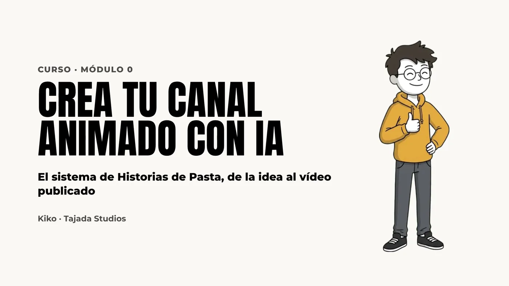
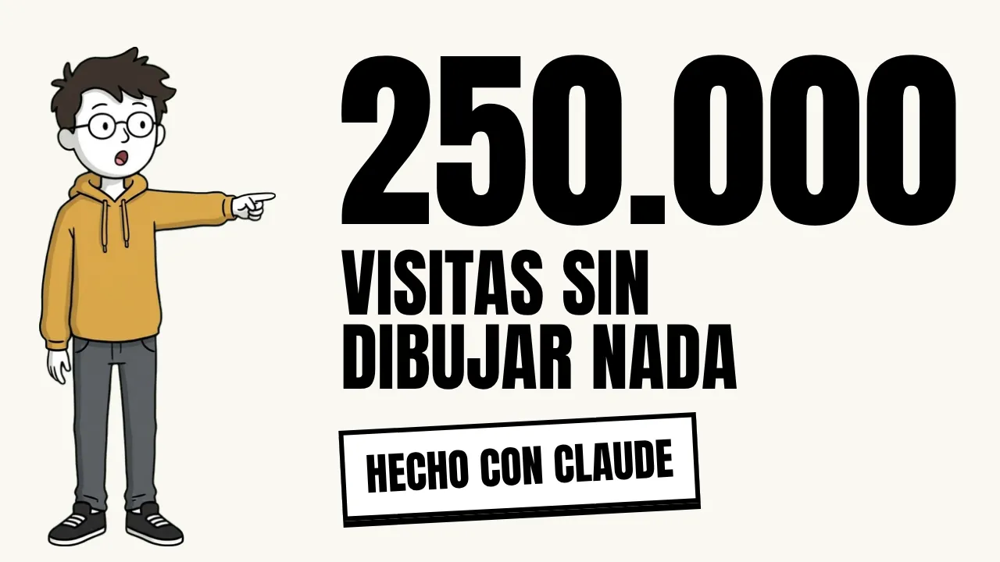
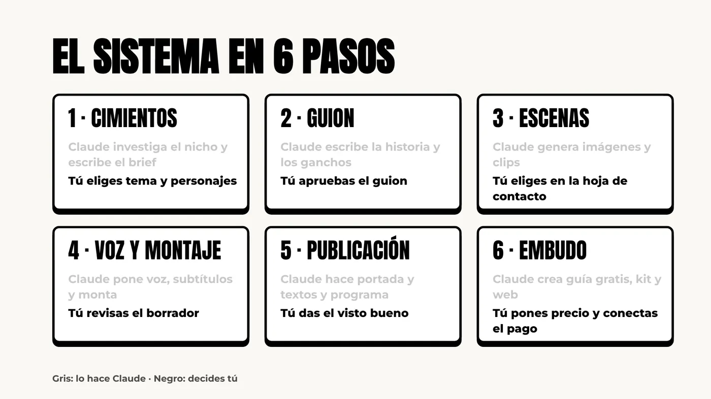

Crea tu canal animado con IA
El sistema completo detrás de Historias de Pasta, paso a paso, para que montes tu propio canal sobre el tema que quieras. Tú decides; Claude hace el trabajo pesado.

Por qué funciona
Un canal que se produce casi solo
visualizaciones de Historias de Pasta sumando todas las redes. Sin dibujar, sin grabar mi voz y sin montar un solo vídeo yo.
de tu tiempo por Short, en decisiones: elegir la idea, aprobar el guion, elegir escenas y dar el visto bueno.
al mes en herramientas (Claude, Higgsfield, ElevenLabs y Drive). Se puede empezar con menos.
Datos de Historias de Pasta a 23 de octubre de 2026. Precios de herramientas aproximados; pueden cambiar. Los resultados de cada canal dependen del nicho y de la constancia.
El sistema
Seis pasos. Una decisión tuya en cada uno.
1 · Cimientos
Claude investiga el nicho y escribe el brief del canal.
Tú eliges el tema y los personajes.
2 · Guion
Claude escribe la historia y los ganchos.
Tú apruebas el guion.
3 · Escenas
Claude genera imágenes y clips con tus personajes.
Tú eliges las mejores.
4 · Voz y montaje
Claude pone voz, subtítulos y gráficos, y monta el vídeo.
Tú revisas el borrador.
5 · Publicación
Claude hace portada y textos y lo programa en todas las redes.
Tú das el visto bueno.
6 · Embudo
Claude crea la guía gratis, el producto y la web.
Tú pones el precio y conectas el pago.
Qué incluye
Ocho módulos y las skills listas para usar
- 1Cimientos del canal. Nicho e idioma con datos, brief y formatos.
- 2Personajes y estilo. Elenco con contraste, estilo simple y biblia de estilo.
- 3Claude como tu equipo. Proyectos, documentos, skills y conectores.
- 4El Short de 35 segundos. Ganchos que funcionan, guion y montaje vertical.
- 5El episodio largo. Historia con pausas explicativas, voz y montaje automático.
- 6Publicar en automático. Portada, textos y programación en cuatro redes.
- 7Monetizar. Guía gratis, producto de pago y página de venta.
- 8Escalar. Leer métricas, mejorar ganchos y abrir un segundo canal.
🧰 Las skills, listas para usar
Los mismos procesos que uso cada semana, sin datos de mi canal: los cargas en Claude, rellenas los documentos de tu canal y funcionan con tu tema.
⛪ Historias de Fe, desde cero
Para demostrar que no depende de las finanzas, construyo un canal nuevo delante de ti: de un nombre y dos cuentas vacías a su primer vídeo publicado.
Empieza gratis
El módulo 0, en abierto
Seis minutos con el sistema completo y un episodio de Historias de Pasta hecho en Claude. Míralo antes de decidir.
Ver el módulo 0 gratis
Es para ti si…
- Tienes un tema que dominas y quieres convertirlo en un canal sin cámara.
- No sabes dibujar, animar ni editar, y no quieres contratar a nadie.
- Trabajas a jornada completa y tienes pocas horas a la semana.
- Quieres un sistema que se repita cada semana, no un truco de un día.
No es para ti si…
- Buscas un canal que se haga solo sin decidir nada.
- Quieres resultados garantizados o dinero rápido.
- Prefieres grabarte en cámara: esto va de animación.
Preguntas frecuentes
Antes de reservar
¿Qué significa preventa?
Que pagas hoy al precio de lanzamiento y recibes cada módulo por email en cuanto se publica. El módulo 0 ya está disponible gratis.
¿Es 100 % automático?
No, y es mejor así. Claude hace la investigación, el guion, las imágenes, la voz, el montaje y la programación. Tú apruebas el guion, eliges escenas y das el visto bueno final.
¿Sirve para mi tema?
Sí. Nada del sistema está atado a las finanzas: el canal vive en sus documentos, no en las skills. Lo demuestro en el curso con Historias de Fe.
¿Necesito saber programar?
No. Claude escribe y ejecuta el código del montaje. Tú solo necesitas saber pedir y revisar.
¿YouTube monetiza vídeos hechos con IA?
Monetiza contenido original; lo que penaliza es lo repetitivo y hecho en serie. Por eso el sistema usa personajes propios, historias con criterio y una voz de narrador fija. Lo vemos en el módulo 1.
¿Cuánto cuestan las herramientas?
Unos 79 € al mes con los planes que uso yo, y menos si empiezas generando las imágenes a mano con Google Flow. No están incluidas en el precio del curso.
¿Y si no me sirve?
Escríbeme a kiko@tajadastudios.com en los 14 días siguientes a la compra y lo hablamos.

Tu canal, con tu tema
El mismo sistema que hace Historias de Pasta cada semana, explicado paso a paso y con las skills listas para usar.
Reservar mi plaza · 99 €Preventa · Precio de lanzamiento · IVA incluido. Los resultados dependen de tu nicho y tu constancia.